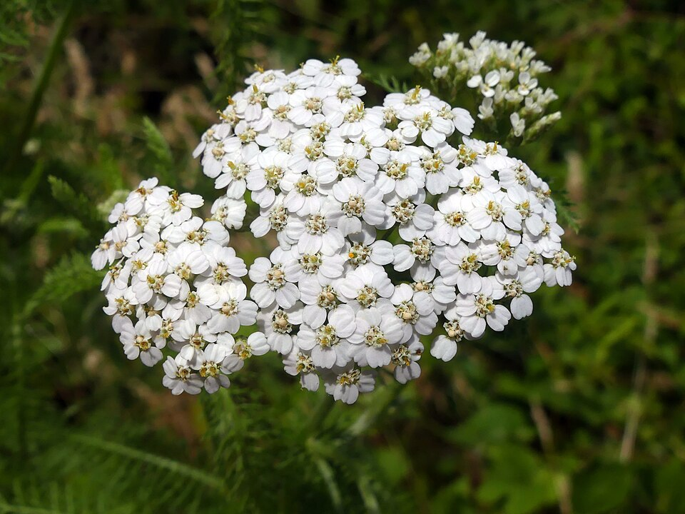

[name]
Names
- Achillea millefolium
- Milfoil
- Western Yarrow
- Nosebleed Plant
- Old Man's Pepper
- Soldier's Woundwort
- Common Yarrow
Appearance
“Yarrow grows to 3 feet tall and has no branches except near the top. The leaves are alternate, 3-5 inches long, with many leaflets on each side of the midrib (1- pinnately lobed); and these are further divided into smaller leaflets, giving them a delicate, fernlike, lacy appearance. Flower heads are arranged in large, compact clusters at the top of the stem, each cluster consisting of 1 or more flower heads. The flower head has 20-25 yellowish-white (rarely pink) ray flowers and similarly colored disc flowers.”Lady Bird Johnson Wildflower Center 
“Common Yarrow” by Allen Browne, CC0 1.0
Habitats
Description
Meadows, pastures, lawns. It grows well on practically all soils but the poorest of them.
List of Locations
Within the US
- All of the states. ALL 50 OF THEM.
Uses
- Leaves are edible (in moderation)
- Can be used in tea
- Many medicinal uses (in moderation)
- Treating wounds, colds, fevers, kidney diseases, toothache, etc.
- Easing menstraul pain
References
- Achillea Millefolium Yarrow, Boreal Yarrow, California Yarrow, Giant Yarrow, Coast Yarrow, Western Yarrow, Pacific Yarrow PFAF Plant Database. pfaf.org/user/plant.aspx?LatinName=Achillea+millefolium.
- Lady Bird Johnson Wildflower Center - the University of Texas at Austin. www.wildflower.org/plants/result.php?id_plant=acmi2.
- USDA Plants Database. plants.usda.gov/plant-profile/ACMI2.